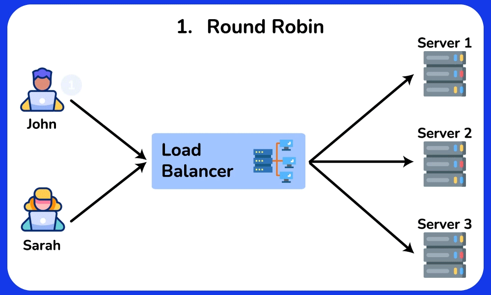
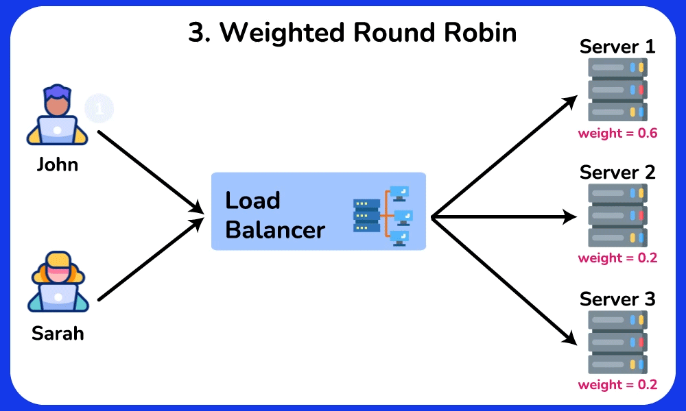
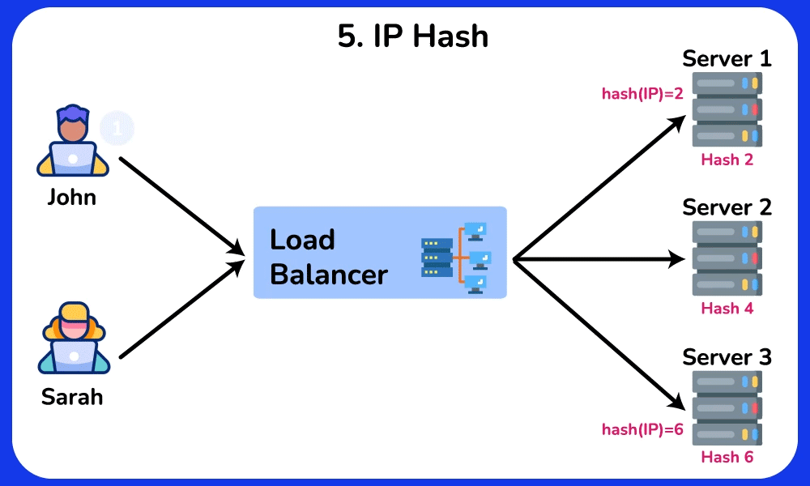
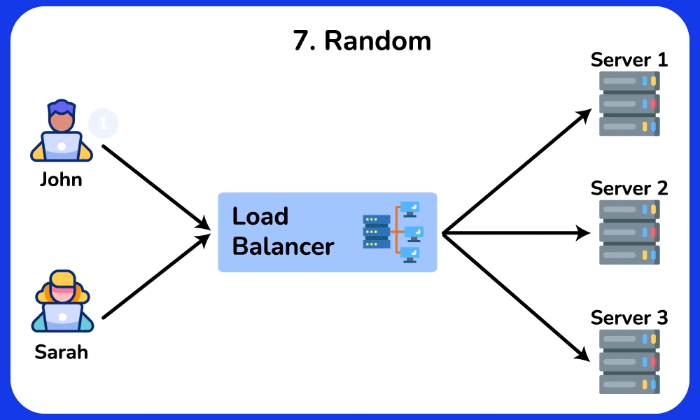
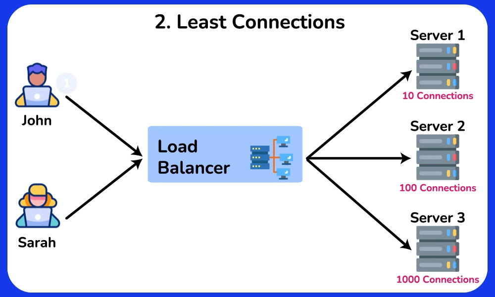
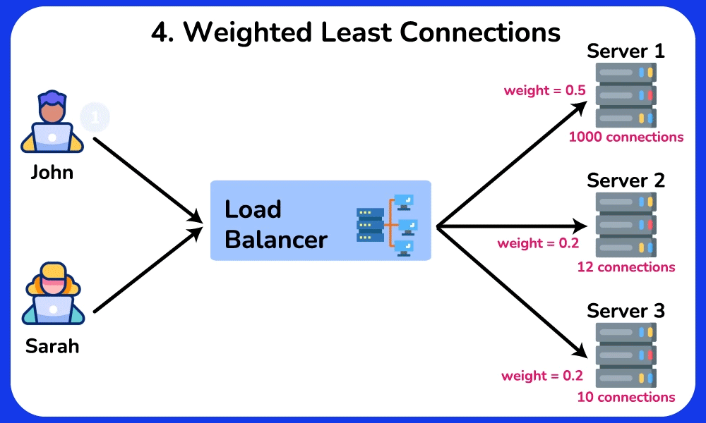
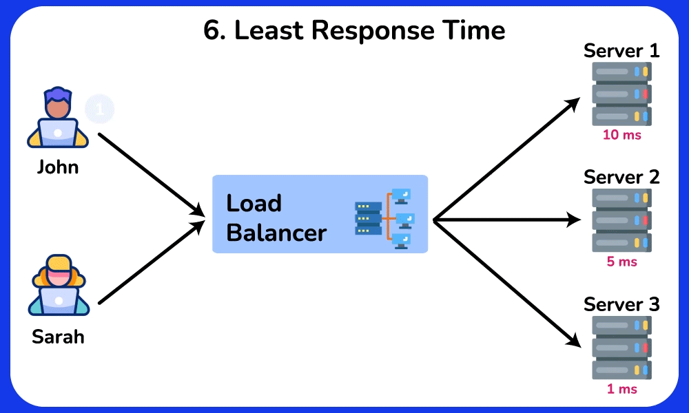

System Design Mastery
Master scalable systems with premium insights
⚖️ Load Balancing Algorithms
Why Load Balancing Algorithms Exist
They solve the problem:
Which server should handle the next request?
Different algorithms choose servers differently based on:
- Current load
- Server capacity
- Network latency
Load balancing, algorithms are broadly divided into two categories:
1️⃣ Static Load Balancing Algorithms
2️⃣ Dynamic Load Balancing Algorithms
The difference depends on whether the load balancer considers the current server state or not.
1️⃣ Static Load Balancing Algorithms
What it means
Static algorithms distribute requests without checking the current load of servers.
The decision is made using predefined rules.
The load balancer assumes all servers behave similarly.
Characteristics
- Simple
- Fast
- No monitoring needed
- Works well when servers have similar capacity
Algorithms under Static
Round Robin
What it is
Requests are distributed sequentially across servers.
It assigns a request to the first server, then moves to the second, third, and so on, and after reaching the last server, it starts again at the first.

Example servers:
Server A
Server B
Server C
Requests go like:
Req1 → A
Req2 → B
Req3 →
C
Req4
→ A
Req5 → B
Advantages
✔ Simple
✔ Easy to implement
Disadvantages
❌ Doesn't consider server load
Used when:
Servers have equal capacity
Weighted Round Robin
Weighted Round Robin (WRR) is a load balancing algorithm where each server is given a weight based on its capacity (CPU, RAM, performance).
Weight = capacity or priority of a server.
It represents how much load the server can handle.
Servers with higher weight receive more requests.
Example:
Server A weight = 3
Server B
weight
= 1
Traffic distribution:
A → A → A → B → A → A → A →
B
Server
A gets more requests.

On above image
Clients : John
and Sarah send
requests.
Load
Balancer : Receives requests and decides which server should
handle them.
Total weight:
0.6 + 0.2 + 0.2 = 1.0
This means the traffic distribution will be:
| Server | Weight | Traffic Share |
|---|---|---|
| Server 1 | 0.6 | 60% requests |
| Server 2 | 0.2 | 20% requests |
| Server 3 | 0.2 | 20% requests |
If Only 4 Requests Arrive
Calculate expected share:
| Server | Calculation | Result |
|---|---|---|
| Server 1 | 4 × 0.6 | 2.4 |
| Server 2 | 4 × 0.2 | 0.8 |
| Server 3 | 4 × 0.2 | 0.8 |
But we cannot send 2.4 requests to a server. Requests must be whole numbers.
So the load balancer approximates to 3.
Possible distribution:
Server 1 → 3 requests
Server 2
→ 1
request
Server 3 → 0 requests
Why?
Because Server 1 has the highest weight, so it receives the extra request when rounding happens.
Advantages :
Better load distribution than simple Round Robin
Disadvantages :
Complexity in Weight Assignment : Determining appropriate weights for each server can be challengin
When used
When servers have different capacities.
IP Hash
What it is
The client IP address determines which server handles the request.
Uses a hash of the client’s IP to determine the server.
Example :
hash(IP) % servers
Same user → same
server.
Suppose you
have three servers (Server A, Server B, and Server C) and a client
with the IP address
192.168.1.10 .
The load balancer applies a hash function to this
IP
address, resulting in
a
hash value. If the hash value is 2 and there are three servers, the load balancer
routes
the request to Server C (2 % 3 = 2).

Advantages
✔ Session persistence (User must
always
connect to the same server)
✔ Good for login sessions
Disadvantages
❌ Uneven distribution possible (requests are not equally or fairly spread across servers)
Random Algorithm
Random algo distributes incoming requests to servers randomly
Example:
Req1 → B
Req2 → A
Req3 → C

Advantages
✔ Simple
✔ Fair distribution in
large
systems
Disadvantages
❌ May cause imbalance (some servers may receive more requests, while others receive fewer requests)
2️⃣ Dynamic Load Balancing Algorithms
What it means
Dynamic algorithms distribute requests based on the current load of servers.
They monitor:
- CPU usage
- Memory
- Active connections
- response time
Characteristics
- More intelligent
- Adapts to real-time load
- Slightly more complex
Algorithms under Dynamic
Least Connections
The Least Connections algorithm directs incoming requests to the server with the lowest number of active connections.
Meaning :
The load balancer checks how many requests each server is currently processing.
The server with the lowest number of active requests receives the next request.
Example:
Server A → 20
connections
Server B → 5
connections
Next request → Server B

Advantages
✔ Balances real-time load
✔
Works well
for long sessions
Disadvantages
❌ Slightly more complex
Used for:
Long-lived connectionsWeb applications
Weighted Least Connections
The Weighted Least Connections algorithm combines the Least Connections and Weighted Round Robin algorithms.
In Weighted Least Connections, the load balancer chooses the server with the Smallest Value of:
Active Connections / Weight
This ratio helps consider both server load and server capacity.
- Active Connections → how many requests the server is currently handling
- Weight → capacity of a server
Why This Works
Servers with higher weight can handle more requests.
Servers with lower active connections are less busy.
So the algorithm balances capacity + current load.
The server with the lowest (active connections / weight) ratio receives the next request.

Advantages :
Handles heterogeneous servers well.
Disadvantages :
Slightly more complex to implement.
Least Response Time
Load balancer directs incoming requests to the server with the lowest response time and the fewest active connections.
The server with lowest response time gets the next request.
Lower response time = faster server
So the load balancer chooses the server that can deliver responses quickest.

Advantages
✔ Fast user experience – requests
go to
fastest server
✔ Adapts to real-time performance
Disadvantages
❌ Requires continuous monitoring
of
response times
❌ Fast servers may become overloaded if not controlled
🎯 Summary
Load balancing algorithms distribute incoming requests across multiple servers using strategies like round robin, least connections, or IP hashing to improve scalability and reliability.